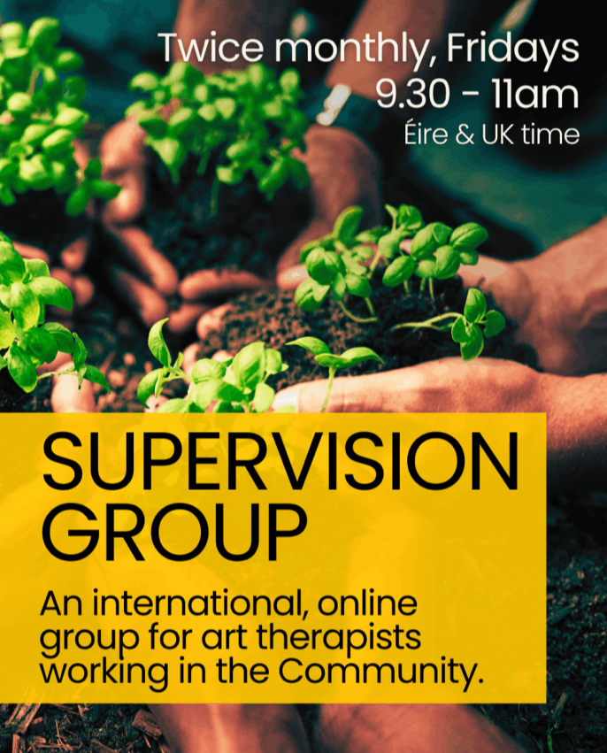
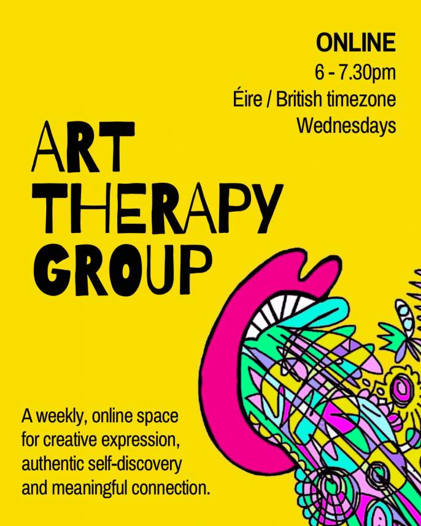
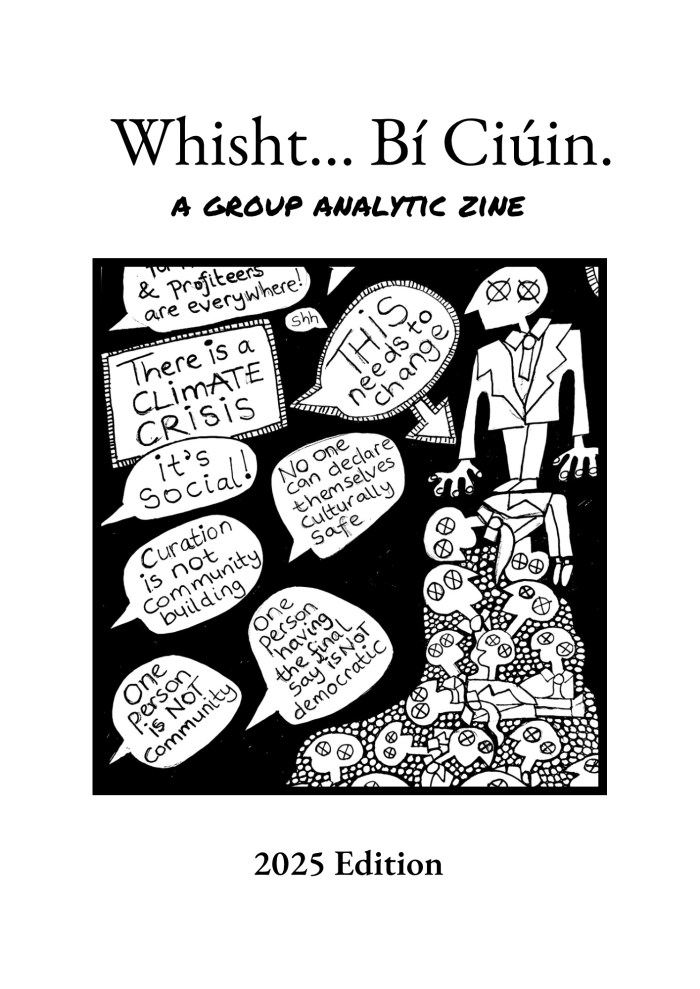
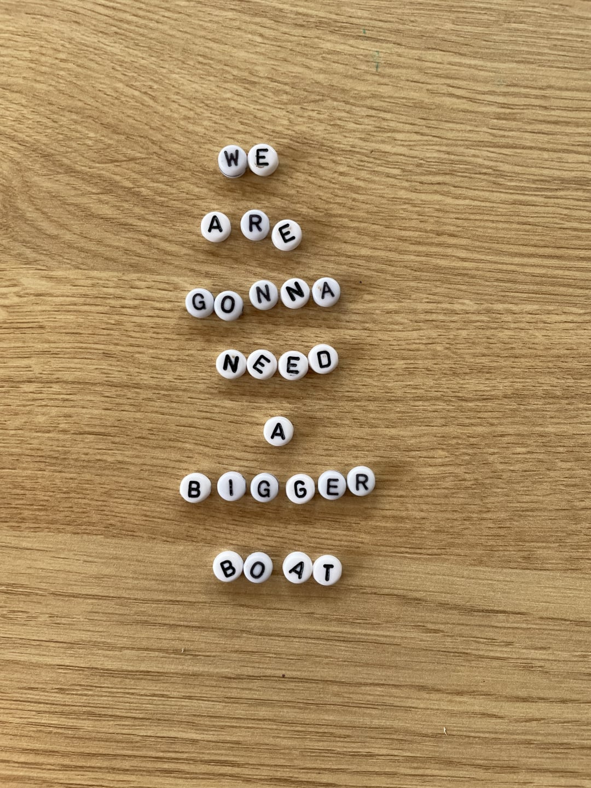
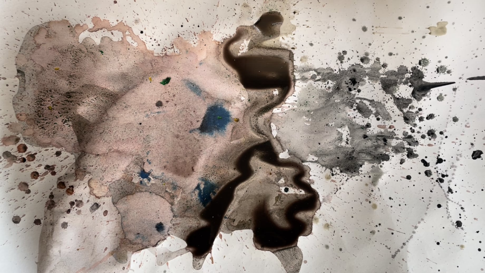
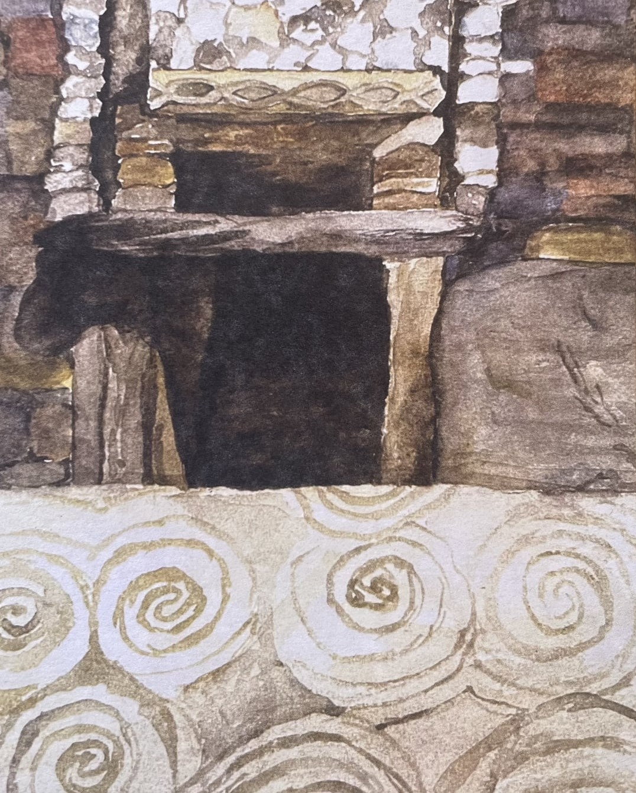

Art Psychotherapy and Supervision
Newark, East Midlands (UK) & Online
I'm Aisling Fegan, an Irish artist and art psychotherapist living in Britain. From my art studio in Newark, I offer art psychotherapy for children and adults — in person or online — alongside supervision for art therapists, socially engaged practitioners, and community organisations.
My work is primarily with neurodivergent and queer clients, and those navigating institutional abuse, statutory failures, and transgenerational trauma — as well as climate anxiety, depression, low self-esteem, and disordered eating. My practice is grounded in psychodynamic and group analytic thinking, shaped by the ethos of therapeutic community. I also bring experience from community incident response, disaster recovery, and the television and film industry.
Within this broader practice, I hold a particular specialism in working with Irish people in Britain — first, second and third generation — and the specific ways historic institutional harms and inherited family history surface across generations. If you'd like to know more about this way of working, I've written a paper on Irish culturally sensitive psychotherapy: Uprooting and Rewilding: Irish Culturally Sensitive Psychotherapy (Fegan, 2025).
Our first conversation — thirty minutes, free of charge — is a chance to ask questions and think together about whether I might be the right therapist for you.

![#arttherapy #art #therapy #psychotherapy #redress #motherandbabyhomes #groupsupervision #grouptherapy #artpsychotherapy #mentalhealth #depression #anxiety #mindfulness #stress ]](assets/images/img-7696-1270x1693.jpg)

Art psychotherapy (also known as art therapy) combines psychotherapy with art-making — drawing, painting, or sculpting — to help people express and explore complex thoughts, emotions and trauma.
You don't need to be artistic. The focus isn't on technical skill, but on the creative process itself — what emerges as you work, what you discover, and how making art can help you process difficult emotions and deepen self-awareness. You don't even have to make art in every session.
A trained, HCPC-registered art psychotherapist guides and supports you through this process, creating a safe space for exploration and growth.
Because art psychotherapy doesn't depend on spoken language, it's suitable for all ages, and can be particularly useful for people who have experienced trauma. Any artwork made in sessions is confidential.

Groups form microcosms of society. Dynamics arising in group therapy can echo our personal, social, cultural, and political contexts, offering space to explore who we are and the world around us.
Thinking together with others in a group can help make sense of how the past influences the present. Groups can be a lifeline for people who are isolated, especially those suffering because of social or cultural circumstances. They encourage imagination, connection, and healthy relationships, improve communication skills, reduce feelings of isolation, and can help people find their authentic voice.
Current and recent groups are listed below.

12.30 - 2pm (Éire & UK time), Mondays
With icap (Irish Immigrant Counselling and Psychotherapy), I convene a weekly, online art therapy group for Irish adults living across Britain. Flyer.

9.30 - 11am (Éire & UK time), Fridays
This is a twice monthly, online supervision group for HCPC registered, art psychotherapists living and working internationally. The group aims to support the growth of your community practice and foster meaningful connection between therapists.

6 - 7.30pm (Éire & UK time), Wednesdays
Weekly, online art psychotherapy group meeting across the Irish Sea. For adults.
Flyer.

8 - 9pm (Éire & UK time), Wednesdays
Beginning August 2024, this is a peer group for Community orientated therapists, creatives and group workers. *Feb 2026 Update: This group has been paused for the moment and will resume at a later date.
1.20 - 3pm (Éire & Britain time)
Friday, 30th January 2026
An online art therapy group to mark the Irish tradition of Brigid's Day and the beginning of Spring here in Éire and the Britain.
1.20 - 3pm (Éire & Britain time)
Friday, 6th March 2026
An online gathering for psychotherapists to reflect on past experiences of training, supervision and work.

Born in 2025 out of group work experiences, this group analytic zine has been drawn by Ash… shh. (Aisling Fegan — Irish artist, art psychotherapist, and inhabitant of Britain.)

Democracy involves authentic and collective, large group dialogue. As art psychotherapists, we know that dialogue is not just about words. It includes all forms of expression in our community including silences, different kinds of behaviour and creativity.
As social action, art making offers an accessible way for individuals and communities to find their authentic voices and magnify them. Making art in a large art therapy group can enable authentic community dialogue and true democracy. This method of dialogue elevates awareness, deepens insight and creates meaningful social change.
In community, art making in a large group can help to bridge polarisation in a way safe way. It can help us to understand the origins of problems and how the past impacts the present. It's affects can be far reaching, long lasting and sustainable.
In 2025, I created a zine. It is a form of social action, a creative response to group analytic experiences and is part of large group dialogue - in a visual way. Not all dialogue is verbal. This zine was shaped by the voices, silences and stories that emerge when people come together in a group. Take a look: here.

Supervision is a supportive space to reflect and think together about your therapy work, ensuring client welfare and supporting your development as an art psychotherapist. It centres your work and the people you work with — thinking too about spaces, group dynamics, and the wider world we find ourselves in. Ethical practice is at its heart.
My approach is conversational, psychodynamic and group analytic. Through sharing experience, we deepen our understanding in meaningful conversation. I encourage creative responses, and we can make art within supervision if you'd like — and I welcome conversations about how the work and training affects you, professionally and personally.
Supervision isn't a tick-box exercise. It's a valuable, nourishing space that supports psychotherapists' work sustainably.
For community organisations, supervision helps ensure your work is trauma-informed — offering reflective space, an additional safeguarding measure, support for learning, and protection against burnout.

Where is my Mind? (Featuring one of my supervisors) By Aisling Fegan.

To begin, contact me by email communityarttherapist@gmail.com and we can arrange a time to talk.
Please let me know your name and reason for contacting me, and I'll respond as quickly as possible. My working hours are generally 9.30am–3pm, Monday to Friday.

AI Website Generator